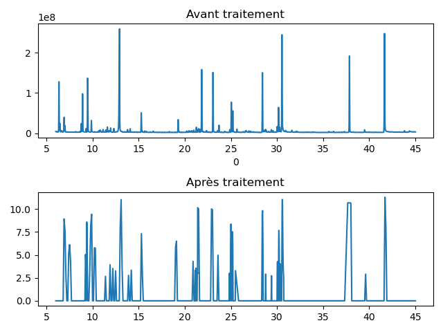

{% extends "base.html" %} {% block title %}Analyse{% endblock %} 
{% block css_add%}  <link href="static/css/styles.css" rel="stylesheet" />  {% endblock%}   
{% block content%}
<style>
    .button {
      display: inline-block;
      padding: 15px 25px;
      font-size: 24px;
      cursor: pointer;
      text-align: center;
      text-decoration: none;
      outline: none;
      color: #fff;
      background-color: #0e00d3;
      border: none;
      border-radius: 15px;
      box-shadow: 0 9px #999;
    }
    
    .button:hover {background-color: #0011ac}
    
    .button:active {
      background-color: #00127a;
      box-shadow: 0 5px #666;
      transform: translateY(4px);
    }
    </style>

<h1 class="mt-4 d-flex justify-content-center" style="color: darkblue;">Analyse Chromatographique</h1>


    <div class="content" align="center">
        <h3>Lancer l'analyse sur un chromatogramme</h3>
        <h6>
        <form method=post enctype="multipart/form-data">
          <br>
          Sélectionner le fichier de la forme : <b>nom-chromatogram.csv</b><br>
          <input type=file name=file>
          <br>
          <br>
          Sélectionner le fichier de la forme : <b>nom-ms.csv</b><br>
          <input type=file name=file1>
          <br>
          <br>
          Assurez-vous que les noms des fichiers sélectionnés apparaissent sur la droite des boutons avant de lancer l'analyse pour éviter toutes erreurs.<br>
          <input type=submit value=Analyser>
        </form>
        <br>
        <h5>{{rep}}</h5>
        <br>
        
        <script src="static/js/analyse.js"></script>
    </div>

    

{% endblock %}